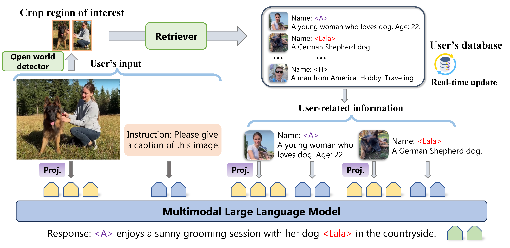
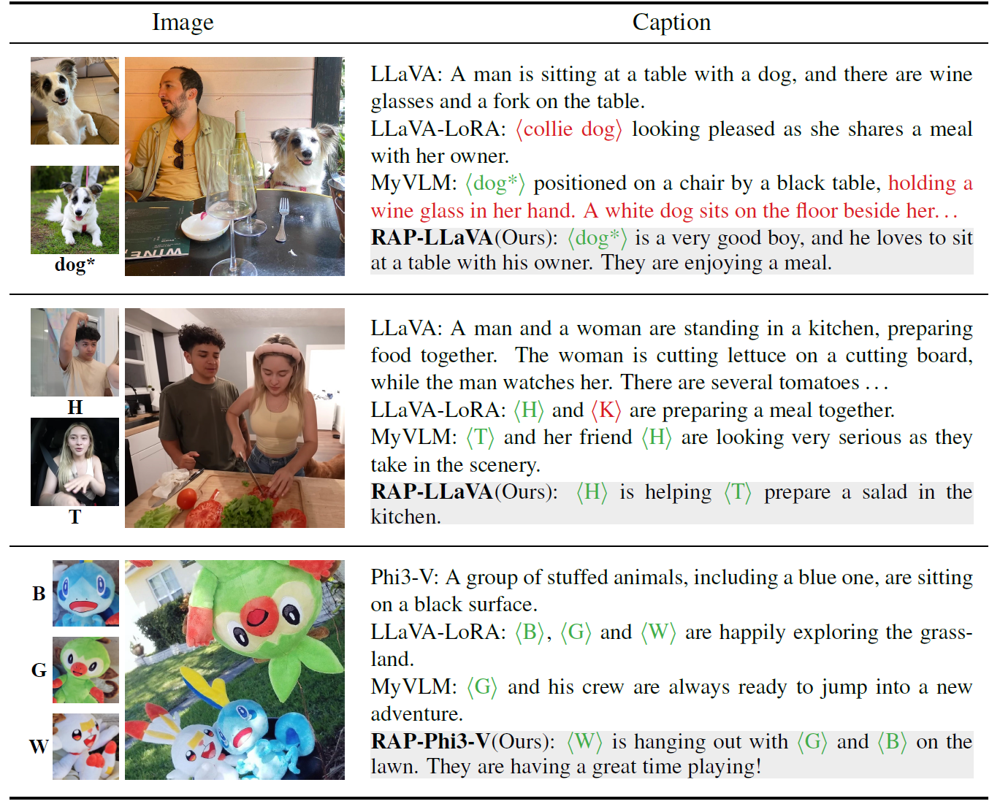

The development of large language models (LLMs) has significantly enhanced the capabilities of multimodal LLMs (MLLMs) as general assistants. However, lack of user-specific knowledge still restricts their application in human's daily life. In this paper, we introduce the Retrieval Augmented Personalization (RAP) framework for MLLMs' personalization. Starting from a general MLLM, we turn it into a personalized assistant in three steps. (a) Remember: We design a key-value database to store user-related information, e.g., user's name, avatar and other attributes. (b) Retrieve: When the user initiates a conversation, RAP will retrieve relevant information from the database using a multimodal retriever. (c) Generate: The input query and retrieved concepts' information are fed into MLLMs to generate personalized, knowledge-augmented responses. Unlike previous methods, RAP allows real-time concept editing via updating the external database. To further improve generation quality and alignment with user-specific information, we design a pipeline for data collection and create a specialized dataset for personalized training of MLLMs. Based on the dataset, we train a series of MLLMs as personalized multimodal assistants. By pretraining on large-scale dataset, RAP-MLLMs can generalize to infinite visual concepts without additional finetuning. Our models demonstrate outstanding flexibility and generation quality across a variety of tasks, such as personalized image captioning, question answering and visual recognition.
Region-of-interest detected by an open world detector are used to retrieve concepts from the database. The images and accompanying information of the retrieved concepts are then integrated into the input for the MLLM.
Our RAP works in three main steps: Remember, Retrieve and Generate. (a) Remember: RAP includes a designed database to help remember each concept via storing its image and basic information, e.g., name, avatar and other attributes. (b) Retrieve: When a user initiates a conversation, RAP will retrieve relevant information from the database using a multimodal retriever. (c) Generate: The input query and retrieved concepts information are incorporated into the MLLM's input for personalized, knowledge-augmented generation. RAP requires only one image per concept with its basic information for personalization. It allows users to make real-time adjustments to the model's outputs by modifying their personal databases, eliminating the need for retraining.
Image examples of target concepts are shown in the left and captions are shown in the right.
Our RAP-MLLMs produce clear and accurate captions based on the database content, which also ensures the reliability of the outputs.
@misc{hao2024rememberretrievegenerateunderstanding,
title={Remember, Retrieve and Generate: Understanding Infinite Visual Concepts as Your Personalized Assistant},
author={Haoran Hao and Jiaming Han and Changsheng Li and Yu-Feng Li and Xiangyu Yue},
year={2024},
eprint={2410.13360},
archivePrefix={arXiv},
primaryClass={cs.CV},
url={https://arxiv.org/abs/2410.13360},
}